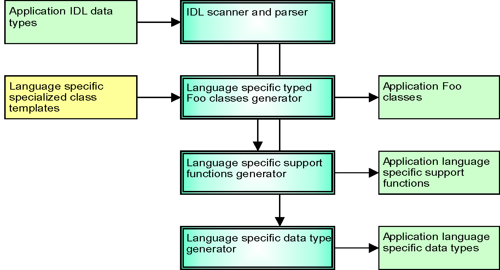

2. Overview¶
The Vortex OpenSplice IDL Pre-processor plays a role in generating code for DDS/DCPS specialized interfaces (TypeSupport, DataReader and DataWriter) from application data definitions defined in IDL for all supported languages.
2.1. Introduction¶
The Vortex OpenSplice IDL Pre-processor supports two modes:
- Standalone mode where the application is only used with Vortex OpenSplice
- ORB-integrated mode where the application is used with an ORB as well as with Vortex OpenSplice
In a standalone context, Vortex OpenSplice provides, apart from the DDS/DCPS related artifacts, all of the artifacts implied by the lDL language-specific mapping. In this case the name space used is DDS instead of the name space implied by the IDL language-specific mapping.
In an ORB-integrated context, the ORB pre-processor will provide for the artifacts implied by the lDL language-specific mapping, while Vortex OpenSplice only provides the DDS/DCPS-related artifacts. The application data type representation provided by the ORB is also used within the Vortex OpenSplice context. In this way application data types can be shared between the ORB and Vortex OpenSplice within one application program.
The Vortex OpenSplice IDL Pre-processor accepts IDL which complies with the OMG CORBA specification to specify application data types. Additionally it allows specifying keys on data types.
A number of DDS data types defined in the DCPS API (for example, Time_t) are available for use with application IDL data types and can be seen as OpenSplice DDS IDL Pre-processor “built-in” definitions.
The diagram OpenSplice IDL Pre-processor High Level Processes shows the Vortex OpenSplice IDL Pre-processor high-level processing.
The Vortex OpenSplice IDL Pre-processor scans and parses the IDL input file containing the application data type definitions.
For the selected language, the Vortex OpenSplice IDL Pre-processor generates the specialized interfaces for TypeSupport, the DataReader and the DataWriter from specialized class template files which are provided by OpenSplice. Note that the Vortex OpenSplice IDL Pre-processor will only generate specialized interfaces for application data types for which a key list is defined. If it is not, the OpenSplice DDS IDL Pre-processor assumes that the data type will only be used enclosed in other data types.
The Vortex OpenSplice IDL Pre-processor also generates language-specific support functions, which are needed to allow the Vortex OpenSplice system to handle the application data types.
For the standalone context the Vortex OpenSplice IDL Pre-processor generates the language-specific application data types according the OMG IDL language mapping that is applicable for the specific target language.
OpenSplice IDL Pre-processor High Level Processes
{kind=link}